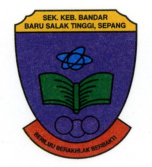

Academic Background
|  SK BANDAR BARU SALAK TINGGI (seBATI) |
I started my primary education at Sekolah Kebangsaan Bandar Baru Salak Tinggi (SKBBST) in 2009 and finished in 2014.In addition to the acronym SKBBST, this school is also known as seBati. |
| After completing primary education, I continued my studies at Sekolah Menengah Kebangsaan Seri Sepang in 2015 until 2019.. |  SMK SERI SEPANG (SMKSS) |
| UITM REMBAU CAMPUS |
After completing my studies at the secondary level, I intend to continue my studies at the Diploma level. In 2021, I will continue my studies at UiTM Rembau campus. Now as a final year diploma student, I intend to continue my studies to a higher level. |